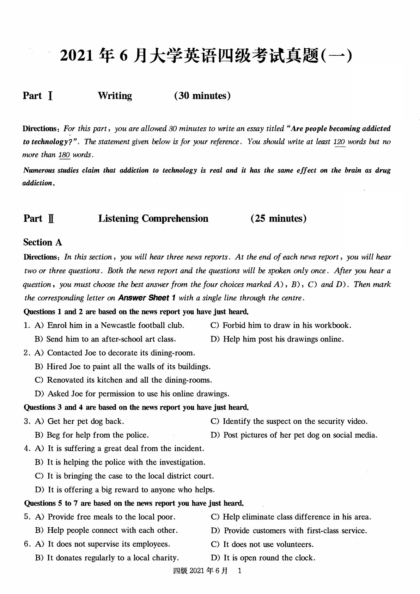

试卷列表
正在载入完整试卷…
INTERACTIVE EXAM · AI TUTOR
自动保存
下载原卷
/
8
适合宽度
适宽
查词 / 标签
选段复制
直线
A
荧光笔
线色
荧光色
橡皮擦
撤回
答题
0/0

正在载入完整试卷与文字层…
SELECTION TAG
记录所选文本
重点
长难句
生词
疑问
标签名称
复习备注
删除标签
取消
保存标签
×
COPY SELECTION
复制所选文本
已选择内容
文本已按试卷阅读顺序整理，可直接复制到笔记。
取消
复制文本
问 AI